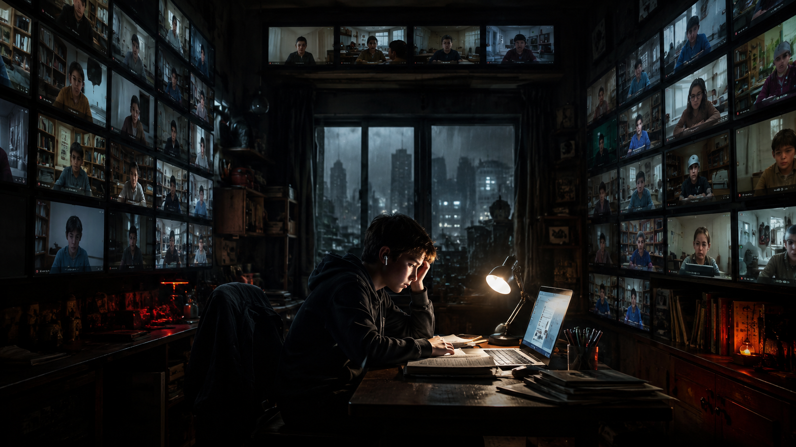
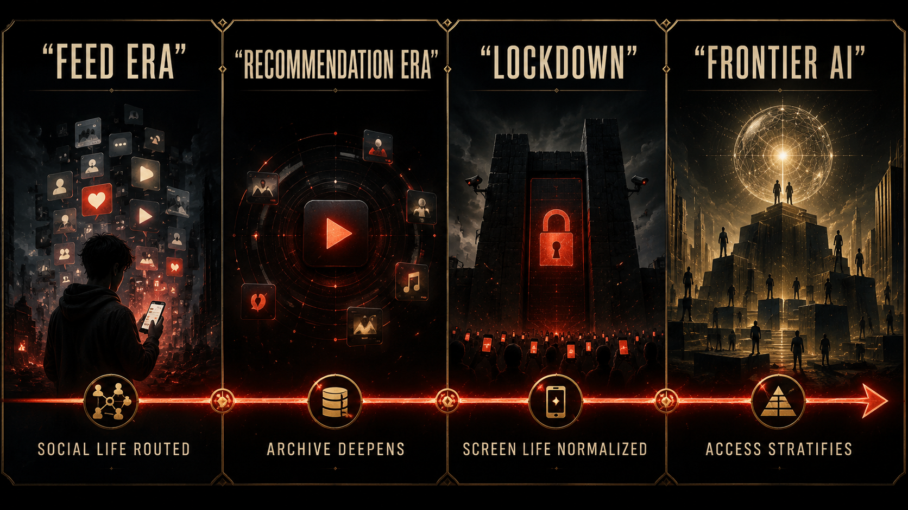
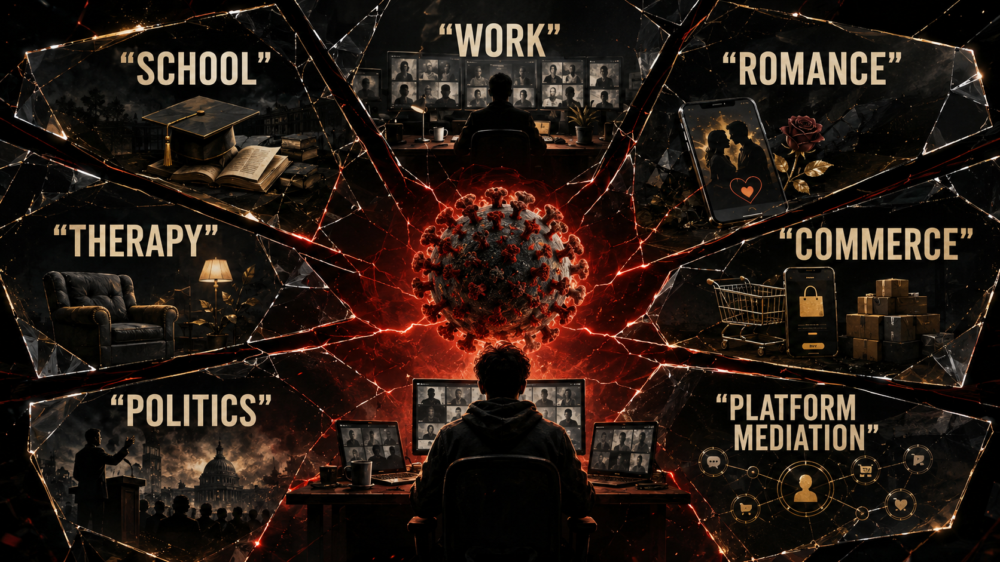

The world went inside. The platforms were waiting.

When the world closed, the screen did not become a convenience.
It became a border crossing.
School crossed there.
Work crossed there.
Dating crossed there.
Fear crossed there.
Therapy crossed there.
Politics crossed there.
Conspiracy crossed there too.
Even boredom crossed there, which sounds small until you remember how much of a society is built inside unstructured time.
For a while, the glow of the interface stopped feeling optional. It became the place where public life could still pretend to continue.
This chapter has to stay disciplined because COVID still scrambles people’s nervous systems the second it enters a room. For some, it brings grief first. For others, rage. For others, institutional distrust. For others, origin theories. For others, the memory of being alone in a bedroom while history happened through a notification pane.
So let’s be precise.
This book is not claiming that the entire pandemic can be reduced to one secret plot.
This book is not claiming certainty where the official record itself does not give certainty.
And this book is not trying to use a world-scale trauma as aesthetic decoration for a thesis.
The claim is narrower and, in some ways, more devastating than a grand totalizing theory.
COVID massively accelerated digital dependence at a civilizational scale.
That point is strong enough without fantasy.
The world did not become digital because the pandemic invented screens. It became more radically digitized because the pandemic forced whole social systems deeper into mediation all at once. Classrooms, meetings, flirting, grief rituals, job interviews, family updates, medical guidance, political conflict, shopping, and cultural release were all pushed further into platform-governed space. What had been habits became requirements. What had been a drift became a structural shove.
That is why so many people still talk about that period like time got weird. It did. Not only emotionally, but infrastructurally. The same few interfaces became school hallway, office corridor, family gathering, panic room, rumor mill, and coping mechanism at once. The rectangle stopped being one tool among many and became the doorway through which almost everything had to pass.
That shove matters because it thickened the archive.
Every panic search.
Every remote lesson.
Every Zoom stare.
Every logistics click.
Every streaming binge during private collapse.
Every lonely message sent at 2:17 a.m. because no one knew what tomorrow was supposed to feel like.
The machine inherited all of it.
And if that sentence sounds too cold for the emotional reality of the period, it should. Because that coldness is part of the point. Human beings were improvising survival. Platforms were expanding necessity. Data infrastructures were absorbing the residue.
None of this requires imputing personal evil to everyone involved. A lot of people were doing their best inside impossible conditions. Teachers trying to hold a classroom together. Therapists trying to keep clients from unraveling. Families trying to see one another through rectangles. Workers trying to stay employed. Kids trying to become adults without public adulthood available. But large systems do not stop extracting just because the people inside them are trying to cope.
For younger readers, that period also left a scar in identity itself. Milestones that normally happen in public got flattened into interface rituals. First love through video lag. Graduation through a stream. Friendship through streak maintenance. Grief through disappearing messages and reaction icons. Even the boredom that once made people wander outside, call a friend, or sit with themselves was rerouted into endless feed consumption. The body was at home, but the nervous system was permanently elsewhere.
That is why the phrase historical accelerator is more useful here than the phrase total explanation. The pandemic did not create platform power out of nothing. It intensified existing trajectories. It made already-powerful mediators more indispensable. It normalized the idea that the screen could carry nearly everything if circumstances demanded it. It collapsed experimentation into routine.
Before lockdown, a lot of people still treated digital mediation as one domain among several.
After lockdown, many people started treating it as baseline existence.
That is not the same thing.

The emotional texture matters too, especially for readers who were young enough to experience the pandemic not as a policy argument but as a developmental environment. Some people lost years that were supposed to be socially formative. Their world became class tiles, silent group chats, algorithmic distraction, porn loops, family stress, ambient catastrophe, and a weird flattening of time. You wake up in the same room, open the same device, check the same dread stream, do your obligations through the same rectangle, and go back to sleep with no clean edge between work, school, fear, leisure, and self.
That kind of life changes cognition.
It changes memory.
It changes attention.
It changes how the body learns presence.
It changes what kind of social friction feels normal.
And because the platforms were the primary terrain through which so much of this life moved, they became even harder to question. Criticizing the screen during that period could feel absurd, almost cruel. People needed it. Many still do. But necessity can deepen dependency without cleansing the politics of the infrastructure.
That is one reason this chapter belongs in the larger argument about empire. Empires rarely appear first as domination. They often appear first as solutions. Something becomes too useful to refuse. Then too central to contest. Then too embedded to imagine away. The pandemic dramatically accelerated the “too useful to refuse” phase of digital life.


It also helped prepare the emotional climate into which the next AI wave would arrive. Think about the timing. By the time the public was being asked to accept synthetic assistants, automated summaries, machine-generated prose, and AI-augmented workflows as natural next steps, a huge share of society had already spent years learning how quickly life could be reorganized around remote mediation. The public mind had been softened for interface substitution.
That softening matters more than a lot of AI marketing admits. If a society has recently lived through a period where remote mediation felt unavoidable, then the next pitch lands differently. “Let the system help.” “Let the workflow adapt.” “Let the model summarize.” “Let the assistant absorb the friction.” Those offers sound less alien after years in which ordinary human continuity already depended on accepting technological substitution faster than anyone would have chosen under normal conditions.
That does not mean everyone liked it.
It means many people were preconditioned for it.
There is a difference.
The role of disputed origin narratives has to stay bounded here. The official record does not justify pretending the origin question is closed beyond debate. It also does not justify using that uncertainty as a trampoline for every totalizing geopolitical conclusion under the sun. The strongest use of the origin dispute in this book is not to settle the metaphysical question of who caused everything. It is to show that uncertainty itself became part of the atmosphere in which trust eroded, institutions polarized, and mediated life hardened.
That erosion matters because brittle trust and exhausted populations are easier to reorganize. Not in a comic-book mind-control sense. In the more ordinary and more dangerous sense that societies under stress become more willing to accept large technical systems as the price of continuity.
The world reopened unevenly.
But a lot of people did not return from the screen all the way.
Their friendships were thinner.
Their focus was worse.
Their work habits were more mediated.
Their tolerance for ambient platform dependence was higher.
Their archive was much deeper.
By then, the machine was closer to speaking than most people realized.
That is the turn this chapter is trying to catch. Not “COVID explains everything.” That is too easy and too sloppy. The sharper claim is that COVID made the social body more extractable, more screen-accustomed, more psychologically frayed, and more infrastructurally prepared for the next layer of AI normalization.
The world went inside.
The platforms were waiting.
And when the world came back out, it brought a larger archive with it.
This chapter adapts the documentary argument developed in the research paper Chapter 03: COVID as a Historical Accelerator. The PDF version is here. That paper separates documented pandemic effects, unresolved origin questions, and the broader structural case for digital acceleration.
By the time public life reopened, the question was no longer whether the archive existed. It was who would turn that archive into capability. The next chapter moves into the hinge of the whole book: how captured human life became training material, and how that material became power.
To our beloved:
Copyright Mark Uriostegui 2026